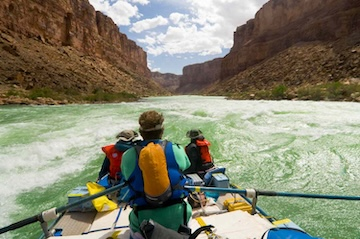
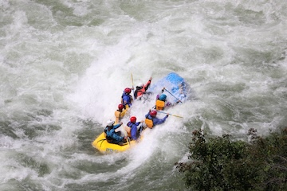
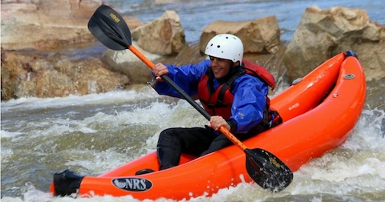

Trips

The Opening Credits is one of our most popular rafting trips. This is about a 4-hour trip. You will go through beautiful, clear water and have timid rapids.

This trip is one of our most dangerous. We do not recommend unless you have at least a little experience rafting before. Aggressive rapids and fast streams make for a good adventure!

This trip is meant for a fun solo trip! You can bring as many friends as you like and enjoy your time going down the rapids! Recommended for all levels!
Other trips
| Jupiter on Earth | Wishy Washy | The Whirlpool |
|---|---|---|
| Jupiter on Earth is a breathtaking trip that is 2 hours in length. You can enjoy some of the views such as the "lonesome tree". This is a very scenic trip | Wishy Washy is a rapid-filled trip that will leave you full of adrenaline. This 2 hour trip is fast paced and meant for experienced rafters who are quick on their feet! Featuring a steep 10-foot drop to end the trip! | The Whirlpool is a simple loop around a medium-sized island in the middle of the river! This usually takes an hour to accomplish and is filled with tons of natural wildlife that stay close to the edge of the river. |